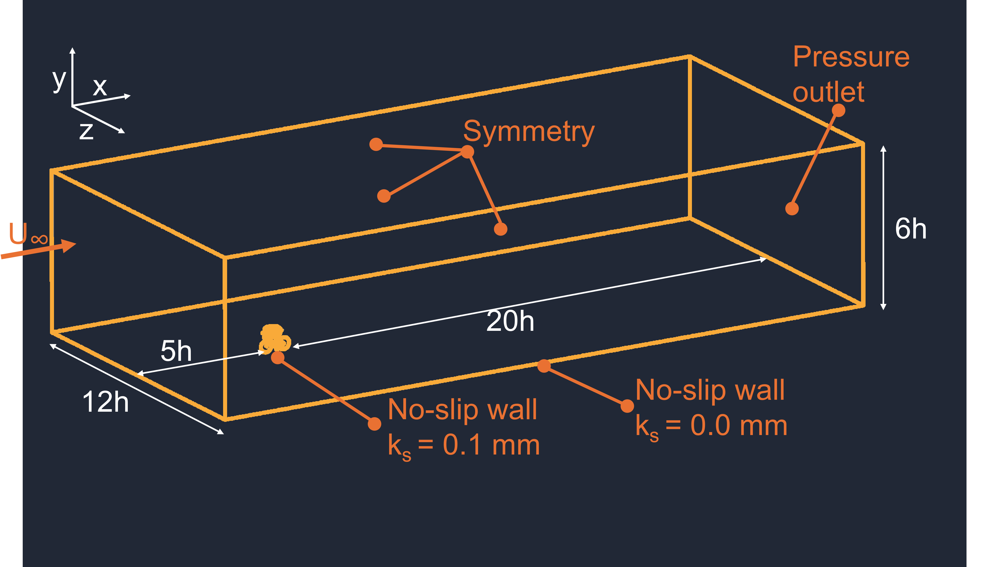

Reference Geometry

Estimate recommended computational domain dimensions for external aerodynamic CFD simulations using commonly adopted best-practice guidelines for atmospheric and bluff-body flows.
Based on recommendations from:
Franke et al. (2007)
Tominaga et al. (2008)
Blocken et al. (2015)
